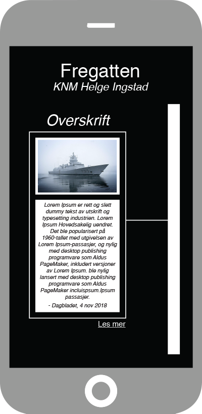
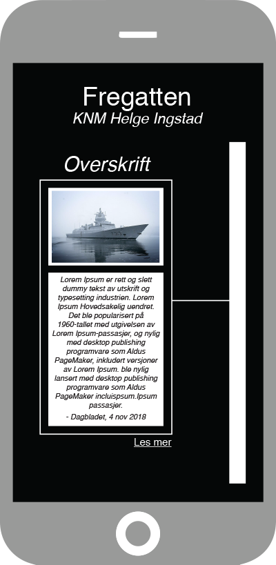

NéA


I den vestlige verden har politikken blitt vesentlig mer polarisert det siste tiåret, dette ser vi spesielt i den amerikanske politikken (Azzimonti, 2013). En befolkning delt i ulike grupper er polarisert når medlemmene i disse gruppene har ulike meninger(Esteban & Ray, 1994). Grafen på høyre side viser tydelig hvordan de politiske meningene til folket i USA har blitt mer ekstreme (Doherty, 2014).
Du lurer kanskje på hva som er problemet med å ha forskjellige meninger. Og nei, det er absolutt ikke noe galt med litt uenighet, tvert imot er det en fordel med et politisk mangfoldig samfunn da det gir rom for et bredere perspektiv på politiske saker. Men farene ved et politisk polarisert samfunn er at folket føler en økt fremmedgjøring fra politikken, som fører til mindre politisk deltagelse og tillit til regjeringen (Layman, Carsey & Horowitz, 2006). Dette kan være en trussel for demokratiet vårt, fordi et demokrati bygger på folkets deltagelse. En annen fare ved polarisering er økt sjanse for ekstremisme, ustabilitet og vold (Sunstein, 2002).
Så hvordan kan vi ved hjelp av teknologi begrense denne politiske polariseringen?
Å løse problemet med politisk polarisering vil ta flere år, om det er mulig i det hele tatt. Uten å gå inn i ytterligere detaljer, er det mange teorier om hva det er som skiller oss så mye (Layman et al., 2006). Det er sammenhengen mellom nyheter og politisk polarisering som vi ønsket å gjøre noe med.
Et problem med dagens nyhetsbilde, spesielt etter Trumps «fake news», er vår tillit til nyhetene. Ifølge The Digital News Report of 2018 er over halvparten av verdens befolkning bekymret for at nyhetene de leser er falske. 51% sier at de stoler på nyhetene de oppsøker selv, mens bare 23% stoler på nyhetene de kommer over i sosiale medier. Land med polariserte politiske institusjoner og høy bruk av sosiale medier skiller seg ut. I Spania er så mange som 69% bekymret for falske nyheter, og ikke langt bak finner vi USA med 64% (Newman, 2018).
Et annet problem er at folk kan bestemme nøyaktig hvilke nyhetskilder de har lyst til å lese uten at de trenger å forholde seg til andre nyhetskilder og dermed politisk informasjon. Det er ikke til å feie under et teppe at de fleste nyhetssider har en eller annen politisk agenda, eller er påvirket av politikken på et eller annet vis. Vi har også en tendens til å søke politisk informasjon som vi er enig (Croft, 2016). La oss ta det høyrevridde nyhetsbyrået Breitbart som et eksempel. Deltakere i Reuters-undersøkelsen vurderte Breitbart til den minst pålitelige nyhetskilden med en poengsum på 3,69 av 10. Samtidig, blant folk som bruker Breitbart regelmessig, er poengsummen 6,96 (Newman, 2018).
Det er med andre ord en klar sammenheng mellom politisk polarisering og polarisering i nyhetene. Bedre fakta og mer åpenhet alene er ikke nok til å få folk til å stole på nyheten, vi må presentere ulike meninger og perspektiver på sakene (Newman, 2018). Vår løsning på polariseringsproblemet er en app som gjør akkurat det, den samler forskjellige nyhetskilder på ett og samme sted, og på den måten skaper vi en plattform der det er mange forskjellige meninger og perspektiver på sakene.
Vår løsning på problemet fokuserer på det teknologiske og sosiale medie aspektet av nyheter, og ikke så mye på områder som ikke blir påvirket av smarttelefoner i like stor kraft. Men som nevnt tidligere, er problemet relatert til og muligens laget av den stadig økende nyhetsstrømmen, som vi også kan spore tilbake til begynnelsen av smarttelefoner (Prebensen, 2018). Løsningen vår går derfor til kjernen av problemet og prøver å gjøre endring før polariseringen blir enda større.
Néa er en ny innovativ app som samler nyheter fra forskjellige nyhetskilder og gjør det enklere for deg å få en komplett oversikt over nyhetssituasjonen. Du kan selv velge om du vil se nyhetsartikler fra hele verden eller fra spesifikke land. Vårt mål er å presentere ulike synspunkter på både viktige samfunnsrelaterte problemer og mindre nyheter på begge sider av det politiske spekteret, slik at du kan gjøre deg opp din egen mening. Appen er politisk uavhengig og har en kunstig intelligens med spesialutviklede algoritmer som filtrerer ut falske nyheter og kategoriserer artiklene. Den kunstige intelligensen oversetter også nyhetene for deg dersom du har valgt å se nyheter fra andre land. Appen gir deg også mulighet til å “følge” saker slik at du kan få varsler når det blir publisert nye artikler angående den aktuelle saken.
På forsiden utforsker man nyhetsartikler som er sortert etter enten tid eller tema, man kan også velge fra “I vinden”, som er saker det blir skrevet mye om i media. Man kan også søke etter spesifikke artikler eller saker. Under “tid” blir man presentert med artikler som er sortert kronologisk, slik at man kan lese seg opp på de siste nyhetene eller velge å lese saker fra egendefinerte tidsperioder. Når man velger tema blir innholdet delt i kategorier og underkategorier. F.eks politikk, sport, kultur osv. Hvis du trykker på en spesifikk sak, for eksempel Fregatten, får du opp alle artikler som er skrevet om denne saken sortert etter tid. Om en av artiklene ser interessant ut, kan du trykke på den for å få et kort sammendrag om den og mulighet til å trykke på “les mer” for å lese hele saken.
 

bilder av oss:
Elin Holde Studentnummer: s333939 Jørgen Huseby Studentnummer: s333932 Fredrik Randers Studentnummer: s333919 Jostein Hauge Studentnummer: s333943